I am a photographer who loves to take pictures of nature and my two Siberian Huskies during our travels.
Gallery
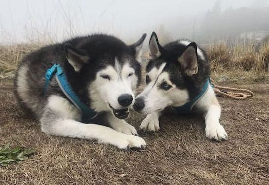
Two huskies chewing on sticks during a foggy, Washington morning.
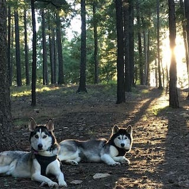
Two huskies lying in the woods, with the sun gleaming between the pine trees
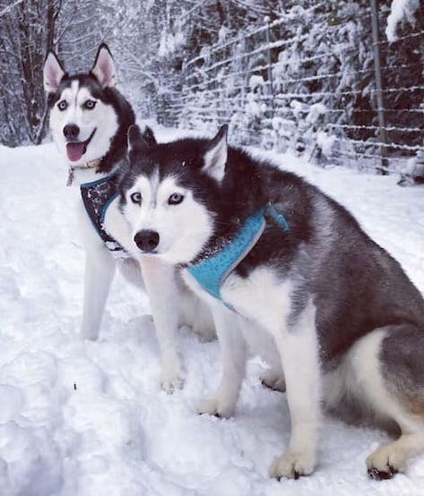
Two huskies sitting in snow at a dog park
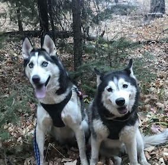
Two huskies on Mount Lemmon, sitting by each other with fall colored leaves on the ground
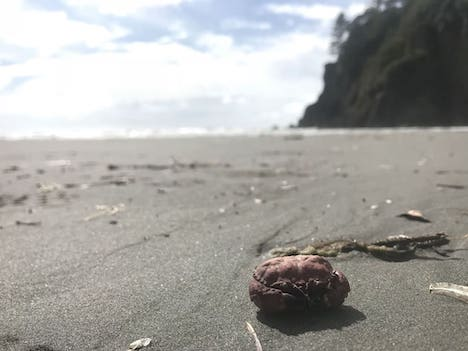
A red crab on Ruby Beach
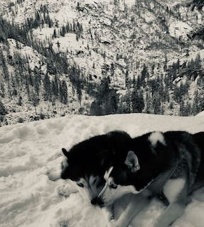
Two huskies lying in snow with their noses touching, and a snow covered mountain behind them
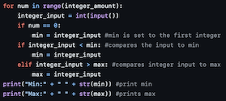
Min/Max pycharm code on Pycharm for my CS161 class
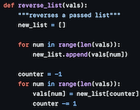
Reverse list code on Pycharm for my CS161 class
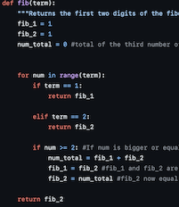
Fibonacci code on Pycharm for my CS161 class
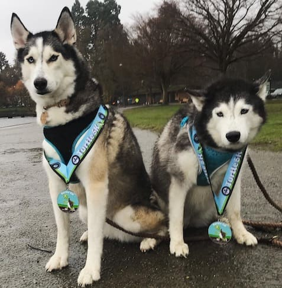
Two huskies wearing award medals, posing after running a race
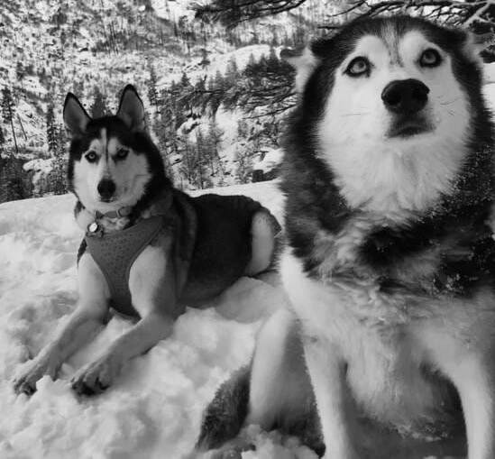
A black and white photo of two huskies in the snow, with a snowy mountain behind them
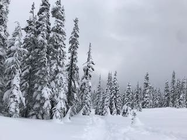
Mount Rainier pine trees covered in white snow
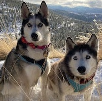
Two huskies sitting in the snow with snowy mountains and the sun shining behind them
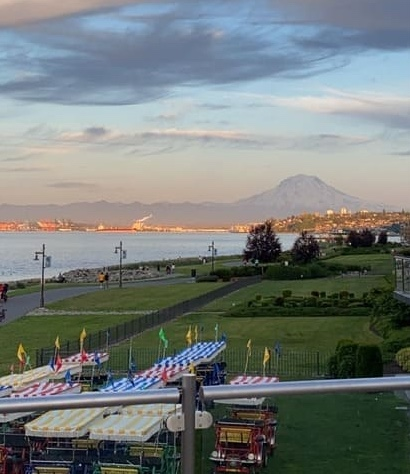
The sun rising with Mount Rainier in the background
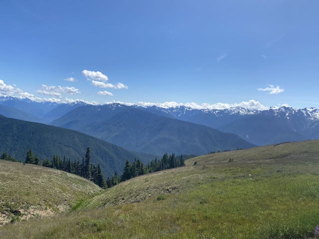
Rolling, green mountains in Olympic National Park
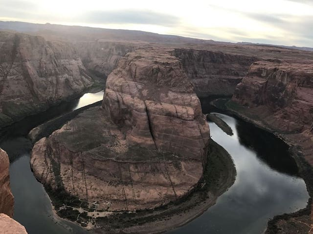
Horseshoe Bend with the sun setting
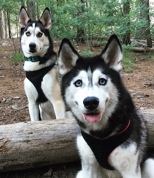
Two huskies sitting by a log on Mount Lemmon